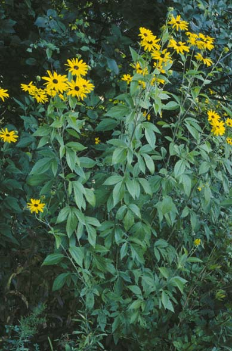
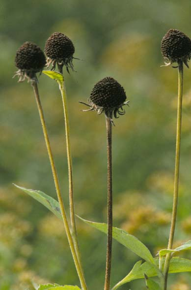

Rudbeckia Subtomentosa
Family: Asteraceae
Sweet Black-Eyed Susan
Swink/Wilhelm #9

Click to view larger photo
FLOWERING: Early August to early September.
SEED TIMING: October.
HABITAT: Moist prairie edges and moist open woodlands.
DIAGNOSTIC FEATURES: Grows 2 to 5 feet. A multi-headed perennial covered with dense, ash-gray hairs. Variable 3-lobed lower leaves and yellow flowers with a central, dark purple button disc.
TO PICK: Pick entire head when brown and dried.
WARNING: Non-toxic plant.